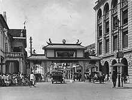

Summary
I am a student of Informatics Engineering. I am a student affairs staff. I am a mentee at Bangkit Academy. and I am hobby playing Badminton.
I was born, grew up, and studied in Medan. Medan is the city that became the place where I grew up and became who I am today. Medan is a city that has many uniqueness and beauty. Medan is a city that has many interesting tourist attractions to visit. Medan becomes a witness to my happiness and sadness. Many stories happened in this city.
Medan comes from the Tamil word Maidhan or Maidhanam, which means a wide field or place, which was later adopted into Malay. In the Indonesian-Karo Dictionary (2002) written by Darwin Prinst, the word 'terrain' means 'be healthy' or 'better.